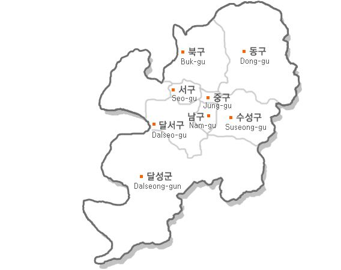

LEE GANG MIN
GONG GA YEONG
LEE SO HEE
JEONG YEON SEO
대구광역시
- 소개 : 영남(경상도) 지방의 중심부에 위치한 도시이자, 광역자치단체이자 대경권을 대표하는 대도시
서울특별시, 부산광역시에 이어 영남권 제 2의 도시이자, 대한민국 제 3의 도시로 일컬어짐. 다만 인구상으로는 243만명의 인구로 973만 서울, 341만 부산, 295만 인천에 이어 4번째 도시
- 역사 :
대구광역시 행정구역 변천사
대구부(1895)
현풍군(1895)
→
경상북도 대구부(1914)
경상북도 달성군(1914)
→
경상북도 대구시(1949)
경상북도 달성군(1949)
→
대구직할시(1981)
경상북도 달성군(1981)
→
대구광역시
大邱廣域市
(1995)
- 구역 :

- 소개 영상 : 관광 명소 TOP 10 -
이상입니다 - 이강민